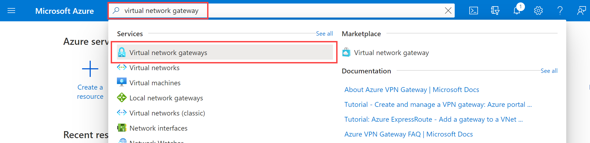

M02-Unit 3 Create and configure a virtual network gateway
In this exercise you will configure a virtual network gateway to connect the Contoso Core Services VNet and Manufacturing VNet.
In this exercise, you will:
- Task 1: Create CoreServicesVnet and ManufacturingVnet
- Task 2: Create CoreServicesTestVM
- Task 3: Create ManufacturingTestVM
- Task 4: Connect to the Test VMs using RDP
- Task 5: Test the connection between the VMs
- Task 6: Create CoreServicesVnet Gateway
- Task 7: Create ManufacturingVnet Gateway
- Task 8: CoreServicesVnet to ManufacturingVnet
- Task 9: Connect ManufacturingVnet to CoreServicesVnet
- Task 10: Verify that the connections connect
- Task 11: Test the connection between the VMs
Task 1: Create CoreServicesVnet and ManufacturingVnet
-
In the Azure portal, open the PowerShell session within the Cloud Shell pane.
-
In the toolbar of the Cloud Shell pane, click the Upload/Download files icon, in the drop-down menu, click Upload and upload the following files azuredeploy.json and azuredeploy.parameters.json into the Cloud Shell home directory.
-
Deploy the following ARM templates to create the virtual network and subnets needed for this exercise:
code$RGName = "ContosoResourceGroup" #create resource group if it doesnt exist New-AzResourceGroup -Name $RGName -Location East US New-AzResourceGroupDeployment -ResourceGroupName $RGName -TemplateFile azuredeploy.json -TemplateParameterFile azuredeploy.parameters.json
Task 2: Create CoreServicesTestVM
-
On the Azure home page, using the global search type Virtual Machines and select virtual machines under services.
-
In Virtual Machines, select + Create; + Virtual machine.
-
Use the information in the following table to create your VM.
Tab Option Value Basics Resource group ContosoResourceGroup Virtual machine name CoreServicesTestVM Region East US Availability options No infrastructure redundancy required Image Windows Server 2022 Datacenter- Gen1 Azure Spot instance Not selected Size Standard_D2s_v3 - 2vcpus, 8GiB memory Username TestUser Password TestPa$$w0rd! Public inbound ports Allow selected ports Select inbound ports RDP (3389) Disks No changes required Networking Virtual network CoreServicesVnet Subnet DatabaseSubnet (10.20.20.0/24) Public IP (new) CoreServicesTestVM-ip NIC network security group Basic Public inbound ports Allow selected ports Select inbound ports RDP (3389) Load balancing Not selected Management No changes required Advanced No changes required Tags No changes required Review + create Review your settings and select Create -
When the deployment is complete, select Go to resource.
Task 3: Create ManufacturingTestVM
-
On the Azure home page, using the global search type Virtual Machines and select virtual machines under services.
-
In Virtual Machines, select + Create; + Virtual machine.
-
Use the information in the following table to create your VM.
Tab Option Value Basics Resource group ContosoResourceGroup Virtual machine name ManufacturingTestVM Region West Europe Availability options No infrastructure redundancy required Image Windows Server 2022 Datacenter- Gen1 Azure Spot instance Not selected Size Standard_D2s_v3 - 2vcpus, 8GiB memory Username TestUser Password TestPa$$w0rd! Public inbound ports Allow selected ports Select inbound ports RDP (3389) Disks No changes required Networking Virtual network ManufacturingVnet Subnet ManufacturingSystemSubnet (10.40.40.0/24) Public IP (new) ManufacturingTestVM-ip NIC network security group Basic Public inbound ports Allow selected ports Select inbound ports RDP (3389) Load balancing Not selected Management No changes required Advanced No changes required Tags No changes required Review + create Review your settings and select Create -
When the deployment is complete, select Go to resource.
Task 4: Connect to the Test VMs using RDP
- On the Azure Portal home page, select Virtual Machines.
- Select ManufacturingTestVM.
- In ManufacturingTestVM, select Connect > RDP.
-
In **ManufacturingTestVM Connect, select **Download RDP file. - Save the RDP file to your desktop.
- Connect to ManufacturingTestVM using the RDP file, and the username TestUser and the password TestPa$w0rd!.
- On the Azure Portal home page, select Virtual Machines.
- Select CoreServicesTestVM.
- In CoreServicesTestVM, select Connect > RDP.
-
In **CoreServicesTestVM Connect, select **Download RDP file. - Save the RDP file to your desktop.
- Connect to CoreServicesTestVM using the RDP file, and the username TestUser and the password TestPa$w0rd!.
- On both VMs, in Choose privacy settings for your device, select Accept.
- On both VMs, in Networks, select Yes.
- On CoreServicesTestVM, open PowerShell, and run the following command: ipconfig
- Note the IPv4 address.
Task 5: Test the connection between the VMs
-
On the ManufacturingTestVM, open PowerShell.
-
Use the following command to verify that there is no connection to CoreServicesTestVM on CoreServicesVnet. Be sure to use the IPv4 address for CoreServicesTestVM.
codeTest-NetConnection 10.20.20.4 -port 3389 -
The test connection should fail, and you will see a result similar to the following:

Task 6: Create CoreServicesVnet Gateway
-
In Search resources, services, and docs (G+/), enter Virtual network gateway, and then select Virtual network gateways from the results. 
-
In Virtual network gateways, select + Create.
-
Use the information in the following table to create the virtual network gateway:
Tab Section Option Value Basics Project Details Subscription No changes required ResourceGroup ContosoResourceGroup Instance Details Name CoreServicesVnetGateway Region East US Gateway type VPN VPN type Route-based SKU VpnGw1 Generation Generation1 Virtual network CoreServicesVnet Subnet GatewaySubnet (10.20.0.0/27) Public IP address Public IP address Create new Public IP address name CoreServicesVnetGateway-ip Public IP address SKU Basic Enable active-active mode Disabled Configure BGP Disabled Review + create Review your settings and select Create. [!NOTE]
It can take up to 45 minutes to create a virtual network gateway.
Task 7: Create ManufacturingVnet Gateway
-
In Search resources, services, and docs (G+/), enter Virtual network gateway, and then select Virtual network gateways from the results.
-
In Virtual network gateways, select + Create.
-
Use the information in the following table to create the virtual network gateway:
Tab Section Option Value Basics Project Details Subscription No changes required ResourceGroup ContosoResourceGroup Instance Details Name ManufacturingVnetGateway Region West Europe Gateway type VPN VPN type Route-based SKU VpnGw1 Generation Generation1 Virtual network ManufacturingVnet Subnet GatewaySubnet (10.30.0.0/27) Public IP address Public IP address Create new Public IP address name ManufacturingVnetGateway-ip Public IP address SKU Basic Enable active-active mode Disabled Configure BGP Disabled Review + create Review your settings and select Create. [!NOTE]
It can take up to 45 minutes to create a virtual network gateway.
Task 8: Connect CoreServicesVnet to ManufacturingVnet
-
In Search resources, services, and docs (G+/), enter Virtual network gateway, and then select Virtual network gateways from the results.
-
In Virtual network gateways, select CoreServicesVnetGateway.
-
In CoreServicesGateway, select Connections, and then select + Add.
[!NOTE]
You will not be able to complete this configuration until the virtual network gateways are fully deployed.
-
Use the information in the following table to create the connection:
Option Value Name CoreServicesGW-to-ManufacturingGW Connection type VNet-to-VNet First virtual network gateway CoreServicesVnetGateway Second virtual network gateway ManufacturingVnetGateway Shared key (PSK) abc123 Use Azure Private IP Address Not selected Enable BGP Not selected IKE Protocol IKEv2 Subscription No changes required Resource group No changes required Location East US -
To create the connection, select OK.
Task 9: Connect ManufacturingVnet to CoreServicesVnet
-
In Search resources, services, and docs (G+/), enter Virtual network gateway, and then select Virtual network gateways from the results.
-
In Virtual network gateways, select ManufacturingVnetGateway.
-
In CoreServicesGateway, select Connections, and then select + Add.
-
Use the information in the following table to create the connection:
Option Value Name ManufacturingGW-to-CoreServicesGW Connection type VNet-to-VNet First virtual network gateway ManufacturingVnetGateway Second virtual network gateway CoreServicesVnetGateway Shared key (PSK) abc123 Use Azure Private IP Address Not selected Enable BGP Not selected IKE Protocol IKEv2 Subscription No changes required Resource group No changes required Location West Europe -
To create the connection, select OK.
Task 10: Verify that the connections connect
-
In Search resources, services, and docs (G+/), enter connections, and then select connections from the results.
-
Wait until the status of both connections is Connected. You may need to refresh your screen.

Task 11: Test the connection between the VMs
-
On the ManufacturingTestVM, open PowerShell.
-
Use the following command to verify that there is now a connection to CoreServicesTestVM on CoreServicesVnet. Be sure to use the IPv4 address for CoreServicesTestVM.
codeTest-NetConnection 10.20.20.4 -port 3389 -
The test connection should succeed, and you will see a result similar to the following:

Congratulations! You have configured a VNet-to-VNet connection by using a virtual network gateway.